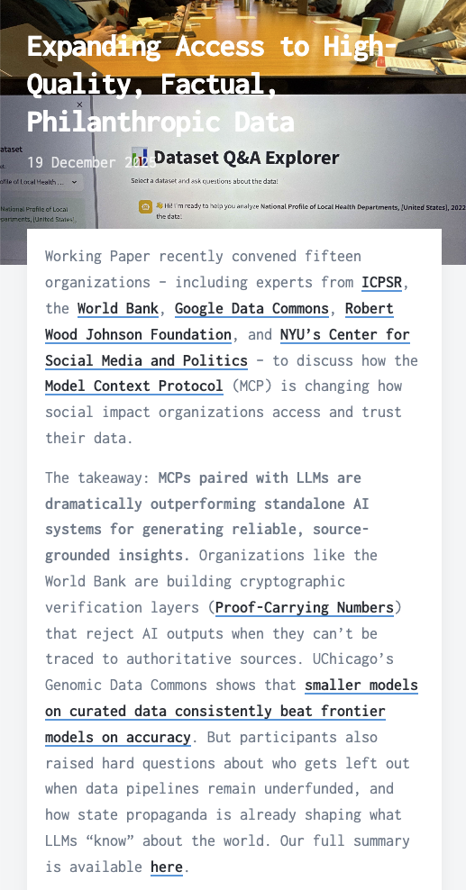

What is MCP
Making Your Data Accessible with AI
CEO, Working Paper
Senior Fellow, Future of Privacy Forum
Who are you to tell me anything?!
The Data Paradox
Philanthropies sit on decades of invaluable data: grant records, evaluation reports, outcome data, policy documents, and hard-won lessons from running programs.
This data could inform better decisions across the entire sector
MCP is the modern way of sharing that evidence
What LLMs Can and Can't Do
- They're very good at: synthesis, translation, summarization, conversational interaction with complex information.
- They're bad at: knowing YOUR data. And they hallucinate when they don't know.
And you probably don't want to hand your sensitive data to a foundation model company to train on.
- (But you may want to give them some training data... more on that in Q&A)
The Workarounds (Before MCP)
- Archives: Operationally expensive taxonomies layered on top of data... Card Catalogs!
- Fine-tuning: Expensive, goes stale, no attribution, your data leaves your hands.
- RAG: Custom per integration, brittle, doesn't compose across datasets.
- Bespoke chatbots: One-off builds that serve one audience through one interface.
None of this scales. Each approach requires rebuilding from scratch for every new dataset and every new AI tool.
How MCP Works
- You structure your data.
- This isn't complex! It's definitions and organization.
- You define tools: functions that describe what questions can be asked and what data comes back.
- You expose those tools through a standard protocol.
- Any AI assistant connects to your server and calls those tools.

What Happens at Query Time
Example: Chicago Public Schools AI Guidance for Parents

What Makes This Different
One server serves every AI client, just like one website serves every browser.
The data owner controls what's exposed and how.
It's an open standard: not locked to any vendor.
Your data never leaves your infrastructure.
This Is Simpler Than You Think
Have you met my friend, Claude?
A 52-page school district AI policy PDF
The CPS AI Guidebook
- Converted to structured JSON. Served by a Python app that runs on a Raspberry Pi.
- ~15 tools. Full OAuth authentication (if you want it). Built-in usage analytics (think carefully about the implications).
- Total infrastructure: a $50 computer. Residential internet. $1.50 of electricity ... at MANHATTAN prices.
Demo
Chicago Public Schools AI Guidelines...
To Parent/Teacher Answer Engine
Not Just Quantitative Data
MCP doesn't just make numbers queryable.
It makes qualitative data — policy documents, narrative reports, institutional knowledge — accessible the way we've traditionally only accessed quantitative data.
Querying Qualitative Data
"What does CPS recommend for parents who want to opt out of AI tools?"
"What are the approved positive uses of GenAI for students?"
"Show me classroom examples for middle school science."
"What does the glossary say about hallucination?"
Every answer is grounded in the actual document. Every answer includes attribution.
The Field Is Moving Fast
A recent convening of 15 organizations surfaced real momentum:
- Launched:
- World Bank Data360: 100M+ annual visits in 30+ languages, with cryptographic verification of AI outputs.
- Google Data Commons: public data from statistical offices and NGOs, integrated and queryable.
- Beta:
- Carnegie Foundation: educational skill progressions served as structured tools for educators.
- ICPSR: making 250,000+ social science datasets discoverable via natural language.
- RWJF: updates to RWJF Answers (shown here before!) built on well-structured data they've curated for decades!

The Risks Are Real
- MCP + LLMs can make weak data look authoritative.
- Data quality is chronically underfunded.
- Building private integrations instead of shared infrastructure replicates existing inequities.
The fundamentals are still... fundamentals: good data requires expertise and investment. Verify your insights.
Where This Goes Next
- Privacy-preserving access: MCP + differential privacy + proof-carrying numbers enables natural language queries against sensitive microdata with formal privacy guarantees — and verification that results aren't hallucinated.
- The system improves through use: the queries people actually ask tell you what data to structure and verify next.
- A real path toward data commons as digital public goods.
What You Can Do Now
Claude Code can do ... Most of this for you
*And if you don't do it -- someone else will
- Structure your data. Pick one dataset, one document, one body of institutional knowledge.
- Think about what questions people would ask of it.
- Start small. One server, one audience, one use case.
- Do the work on prompt engineering to limit hallucinations, inflated claims, etc. (It works remarkably well!)
Questions?
Thank you!
My Inbox is Yours 📨
ag@workingpaper.co
(I am really excited about this and want to find good ways to get data out in the world. AND: I don't have a boss anymore who can tell me "no, don't go work on that important thing"! Please don't hesitate to email me.)